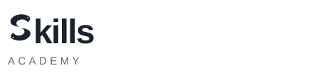

11 / punkt wyjścia

Mocna bryła
Najlepsza masa i najbardziej naturalne „S”, lecz oba ogony kończyły się płasko.
Precyzyjny refinement
Bryła wybranego Twinflow 11 pozostaje bazą. Zmienione zostały wyłącznie dwa centralne terminale: oba koi kończą się teraz czystym, integralnym szpicem inspirowanym najlepszym detalem z wariantu 17.
Porównanie
Nie projektowaliśmy nowego znaku od zera. Zachowaliśmy to, co działało w 11, wyizolowaliśmy mocny detal z 17 i przenieśliśmy go symetrycznie na obie koi. Szpice są częścią korpusów — nie nakładką ani dekoracją.
Najlepsza masa i najbardziej naturalne „S”, lecz oba ogony kończyły się płasko.

Jedna końcówka sugerowała ostrzejszy, bardziej intencjonalny ogon. Reszty konstrukcji nie przenosimy.
Ta sama sylweta 11, ale duet zyskuje kierunek, napięcie i łatwiejszy do zapamiętania centralny gest.
Logo pełne
W logotypie symbol nadal zastępuje pierwszą literę nazwy. Szpic nie konkuruje z napisem i nie przesuwa optycznie całego znaku.


System responsywny
Wersja symbolu zachowuje oczy. Favicon usuwa oczy, dzięki czemu przy 16–24 px zostaje czysta, odporna geometrycznie litera „S”. Ogony nadal wpływają na rytm środka, ale nie są jedynym nośnikiem rozpoznawalności.
Znak pozostaje jednobarwny. Nie potrzebuje gradientu, obrysu ani dodatkowej ramki.
Werdykt projektowy
Wariant Pointed naprawia dokładnie brak wskazany w 11, bez rozmywania jego przewagi. Ostre ogony są zapamiętywalnym „momentem odkrycia”, lecz znak nadal najpierw działa jako mocne „S” i pierwsza litera słowa „Skills”.
{kind=link}
{kind=link}
{kind=link}